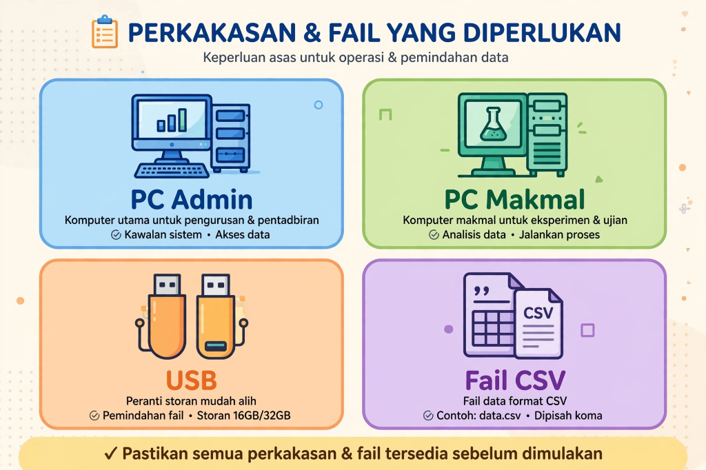

01
Keperluan Sistem & Senarai Semak Peralatan
Sebelum memulakan pemasangan, pastikan anda telah menyediakan perkakasan, perisian, dan fail data murid yang mencukupi bagi melancarkan proses persediaan.
-
A
PC Pentadbir (Komputer Guru Penyelaras ICT)Komputer riba atau desktop dengan Windows 10 (versi 1809 ke atas) atau Windows 11 (64-bit). Digunakan sekali sahaja untuk membina pakej konfigurasi sekolah menggunakan aplikasi
Delima.Admin.exe. -
B
PC Makmal Komputer (Komputer Murid)Komputer makmal yang menggunakan Windows 10/11 x64 dengan pelayar Google Chrome atau Microsoft Edge terpasang. Komputer makmal mestilah mempunyai akaun murid biasa (*Standard User*) serta hak pentadbir (*Administrator*) sementara untuk proses *provisioning*.
-
C
Pemacu Kilat USB (Pendrive)Satu pemacu USB kosong dengan saiz sekurang-kurangnya 1GB berformat FAT32 atau NTFS untuk memindahkan pakej sulit
school.dlmpackke PC makmal. -
D
Fail Data Murid & Kata Laluan DELIMaFail CSV senarai nama murid sekolah serta senarai kata laluan DELIMa murid yang disediakan oleh pihak sekolah.

Placeholder Gambarajah
Gambarajah Ekosistem Persediaan (Admin PC + Lab PCs + USB)
📁 docs/assets/screenshots/langkah-01-keperluan.png
Rajah 1.1: Aliran penyediaan makmal tanpa pelayan awan (100% Zero-Cloud).
Resolusi Disyorkan: 1280x720
Prinsip Privasi Sifar Awan (Zero-Cloud Privacy)
DELIMa Smart Launcher tidak menggunakan sebarang pelayan awan luar, pengkalan data internet, atau analitik penjejakan. Semua data murid dan kata laluan disimpan dan disulitkan secara setempat di dalam komputer sekolah sahaja mengikut piawaian Akta Perlindungan Data Peribadi (PDPA).
Senarai Semak Langkah 1:
-
✓Komputer Guru Penyelaras ICT (Windows 10/11 64-bit) telah tersedia.
-
✓Satu pemacu kilat USB (Pendrive) kosong telah disediakan.
-
✓Fail CSV senarai nama murid dan kata laluan sedia untuk diproses.